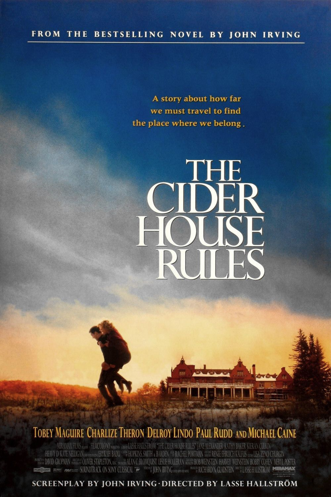

| Watched | ||
|---|---|---|
| Nominations | |||
|---|---|---|---|
| Category | Nominees | Result | Voted |
| Best Picture | Richard N. Gladstein | Nominated | |
| Actor in a Supporting Role | Michael Caine | Won | |
| Directing | Lasse Hallström | Nominated | |
| Writing (Screenplay Based on Material Previously Produced or Published) | John Irving | Won | |
| Film Editing | Lisa Zeno Churgin | Nominated | |
| Art Direction | Beth Rubino and David Gropman | Nominated | |
| Music (Original Score) | Rachel Portman | Nominated | |